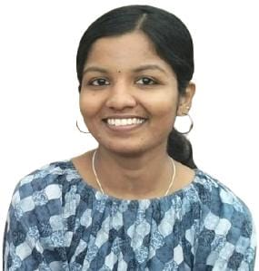

Karunya S
Summary
Aspiring Web Developer and Programmer with experience building projects like an AI Nutrition Advisor website and a hackathon website. Proficient in C, C++, Python, React, HTML, CSS, and JavaScript, with a focus on creating responsive, interactive web applications and writing efficient, clean code. Passionate about problem-solving and continuous learning to deliver innovative solutions.
Education
- B Tech ECE, NSS College of Engineering : 8.37(cgpa)
- Plus Two, Govt.Victoria girls higher secondary school : 97.5%
- SSLC, Yogini matha girls high school : 100%
Projects
- Hackathon Website : Developed a responsive, multi-user hackathon website with separate logins for participants, organizers, and judges, featuring event details, live updates, and submission management.
- Verilog FIFO Memory : Designed and implemented a FIFO (First In, First Out) memory module in Verilog, performing synchronous read/write operations on the positive clock edge, ensuring smooth data handling.
- Smart Fish Aquarium : Built a smart aquarium system using ESP8266 to monitor pH and TDS levels, and automate feeding, filtration, and lighting control for optimal fish care.
Competitions and Programs
- Attended summer school on Data structures and algorithms, IIT Madras
- Participated in Tinkerhub 24 hr women only hackathon
- Participated in Infosys springboard Iaccelerate women hackathon
- Participated in Young Innovators Programme Ideathon
- Participated in college level coding competitions
Certifications
- Problem Solving through Programming in C - NPTEL
- The Joy of Computing using Python - NPTEL
- Introduction to Internet of Things - NPTEL
- Career Essentials in Generative AI - Linkedin and Microsoft
- Software Product Management : Agile Foundations - Infosys Springboard
Positions of Responsibility
- Content lead, Institution's Innovation Council NSSCE
- Treasurer, IEEE Computer Society NSSCE
- Event Coordinator, Elacsta NSSCE
Technical Profiles